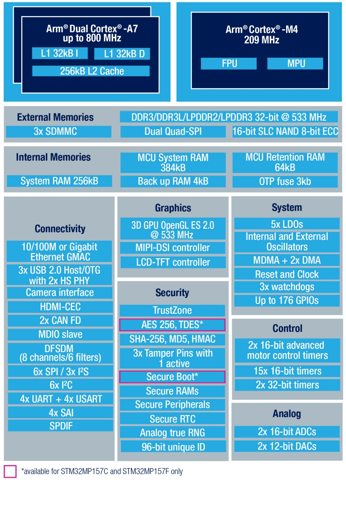
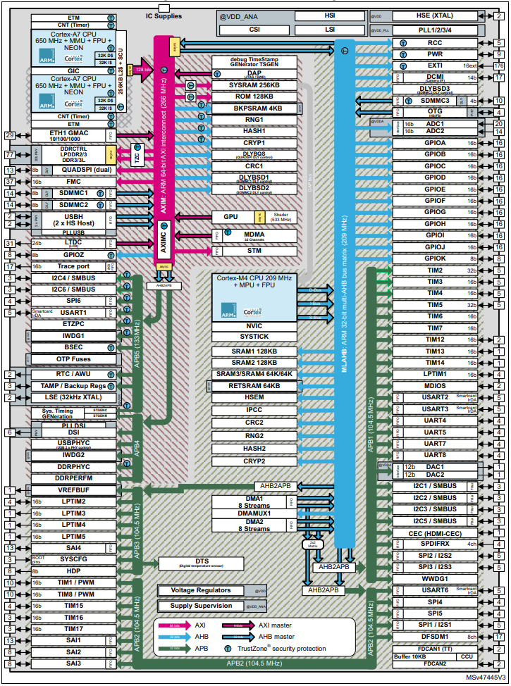
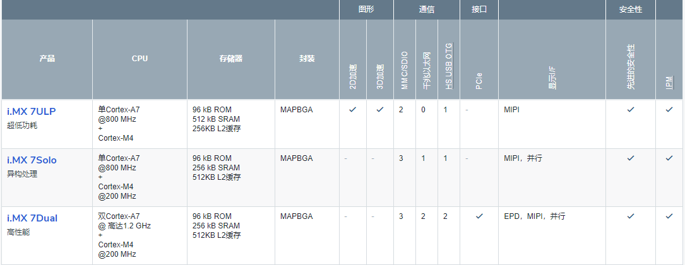
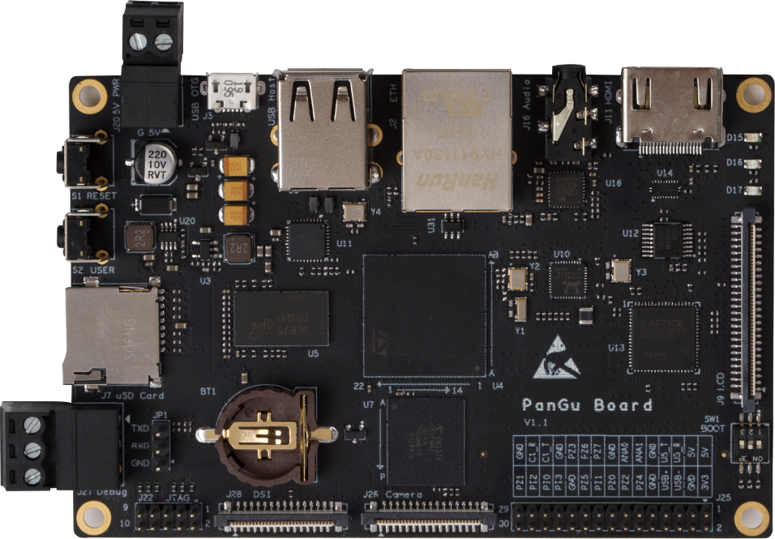

STM32MP15¶
标签 : Cortex-A7 Cortex-M4 32KB L1 256KB L2
Xin简介¶
规格参数¶
STM32MP1系列依托STM32成熟的生态系统，ST可为客户提供加快成功应用STM32MP1设计开发的工具。包括STM32的Cube，CubeMX，CubeProgrammer等软件工具，探索板和全功能评估板等硬件工具，以及为客户提供全方位的客户支持等。
STM32系列主要用于解决客户对实时任务和功耗限制的重要要求，OpenSTLinux作为市场上主流的开源Linux发行版发布，将STM32系列从以实时任务和功耗限制为主的应用扩大到更广泛的市场。
基本参数¶
发布时间：
制程工艺：
参考价格：$6-$11
供货周期：
处理性能：? CoreMark (Cortex-A7)，703 CoreMark (Cortex-M4)
RAM容量：708 KB
Flash容量：
限定参数¶
电压范围：1.71 to 3.6 V
功耗范围：
工作温度：-40°C to 105°C/125°C
封装规格：LFBGA448/LFBGA354/TFBGA361/TFBGA257

特征参数¶
650MHz/800MHz Cortex-A7 Dual Core
209 MHz Cortex-M4
DDR memory up to 1 Gbyte, DDR3/DDR3L-1066 16/32-bit
L1 32-Kbyte I / 32-Kbyte D , 256-Kbyte unified level 2 cache
2 × ADCs with 16-bit max. resolution (12 bits up to 4.5 Msps, 14 bits up to 4 Msps, 16 bits up to 3.6 Msps)
10/100M or Gigabit Ethernet GMAC, IEEE 1588v2 hardware, MII/RMII/GMII/RGMII
3x USB2.0（包括2个高速）
2x CAN-FD
3× SDMMC up to 8-bit
6× I2C FM+ (1 Mbit/s, SMBus/PMBus)
4× UART + 4 × USART (12.5 Mbit/s)
6× SPI (50 Mbit/s)
芯片架构¶
Xin选择¶
品牌对比¶
NXP i.MX6 i.MX7 i.MX8
应用类处理器异构控制器的方案厂商不少，ST可对标的主要对象为NXP，STM32MP15x系列重点对比i.MX系列
NXP i.MX 7¶
其中基础版本配置规格相当，处理器 800MHz Cortex-A7 内核, 控制器 200 MHz Cortex-M4 内核，但是i.MX7具备千兆以太网等高速接口，同系列向上升级扩展非常容易。

如果需要更强的性能进行升级，可以选择i.MX8系列产品，或者采用独立的应用处理器和控制器
NXP i.MX 8¶


Note
就1.8 GHz Cortex-A53应用处理性能而言i.MX 8M Plus已经优于树莓派3B，800 MHz Cortex-M7、双千兆以太网、PCIe Gen3、2.3TOPS NPU都是硬货，所以基本面上不再和STM32MP15系列对比
独立芯片方案¶
性能接近的应用处理器可采用 Allwinner V831, R329，控制器MCU可选方案较多包括 F407范式 ， Arterytek AT32F413
系列对比¶

版本对比¶
必选理由¶
STM32MP15x系列异构处理器，是ST向上突破的探索产物，凭借自身强大的外设配置和开发框架，十分适合用于实现复杂交互和通信的硬件终端。
选择这款芯片的出发点包括在控制器MCU之外部署嵌入式Linux处理设备，通过集成的SoC方案实现空间和能耗上的优化，数据的处理效率和通信效率更高，同时实现了ST的品质和资源接入。
Xin应用¶
OpenSTLinux
开发板¶
PanGu湃兔核¶
BearPi-HM¶